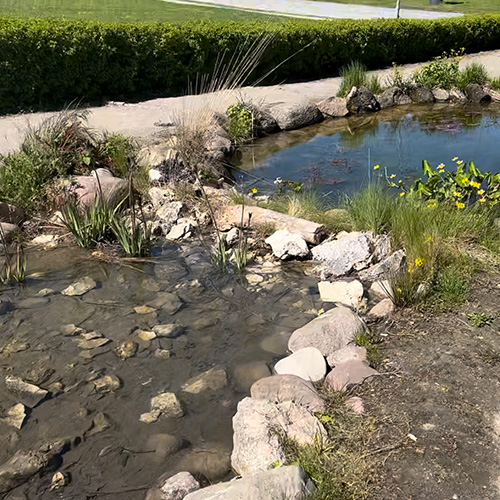
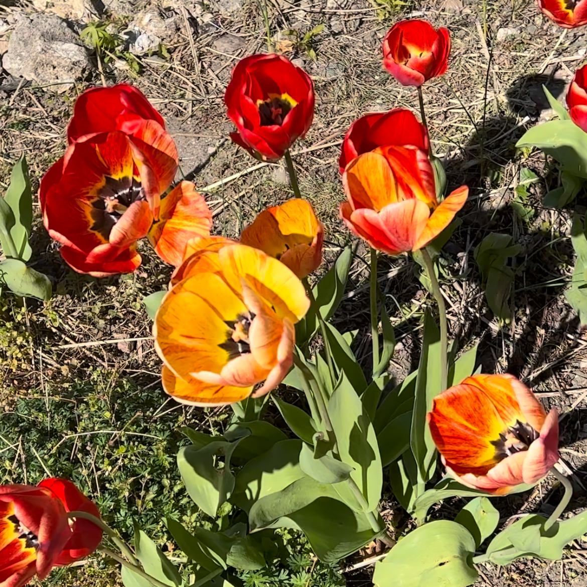
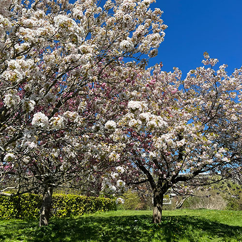

Den vilde baghave
I væksthusenes vilde baghave, kan du gå på opdagelse i forskellige naturtyper og planter fra den danske natur. Baghaven er opdelt i fire forskellige slags naturtyper: strand, eng, overdrev og hede.
Gennem din tur i baghaven er der rig mulighed for at være nysgerrig og lære mere om den danske natur. Hele vejen igennem haven er der nemlig placeret forskellige fakta skilte og brochurer, som du kan tage med dig rundt.
Alt efter hvornår du planlægger dit besøg i Botanisk Have, kan du se både roser, tulipaner og meget mere blomstre blandt små fine vandløb og andre planter fra den danske natur. Der er også placeret bænke rundt i baghaven, hvor du kan nyde udsigten fra og få en pause fra hverdagens gøremål.



